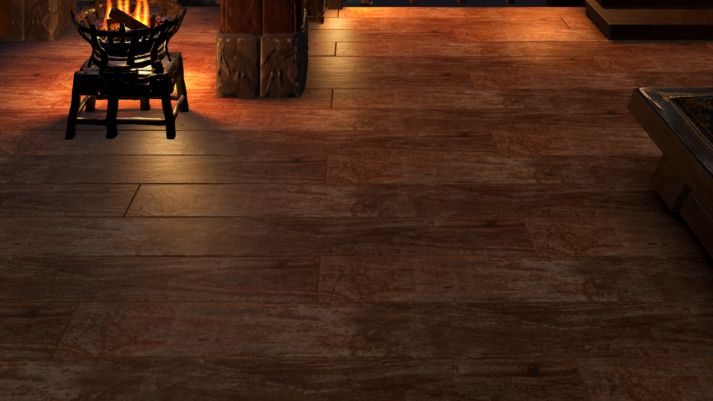
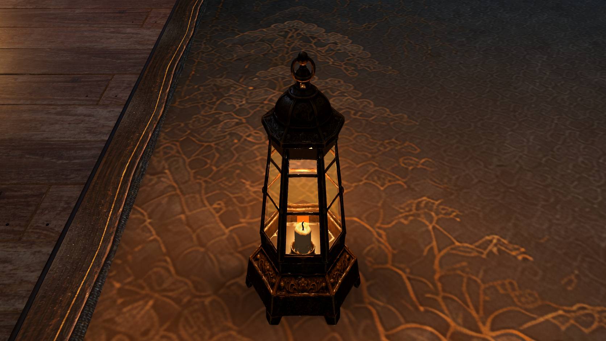
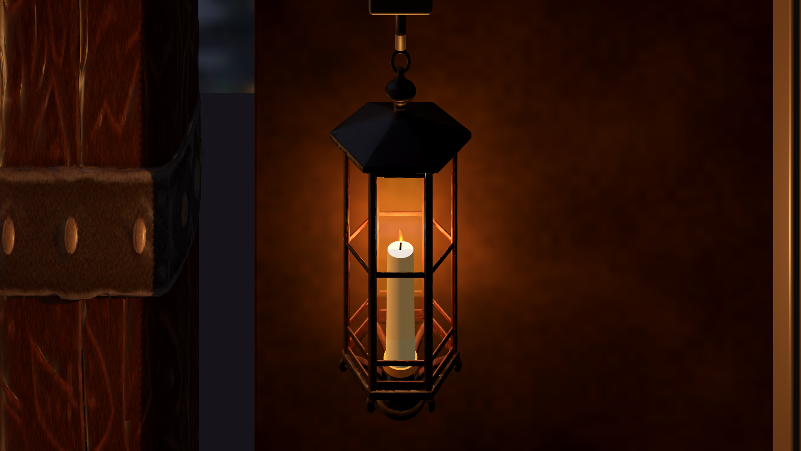

Timber and fixtures

Scanned grain and roughness remain separate from the denoised Blender light field. A short-range contact pass anchors legs and pillar feet.
Existing Meshy table lantern · reduced harsh specular response
Existing Meshy room lantern · candle seated in its socket, with a visible wick and separate flameNo additional Meshy jobs or new room animation in this pass. The map and vista remain source artwork with finite detail; architecture and props are actual geometry. Floor lighting is baked, while other surfaces retain native direct/ambient lighting. Final exact-source fidelity, room animation and sustained gameplay profiling remain separate review items.